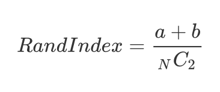
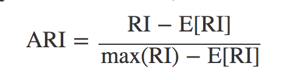
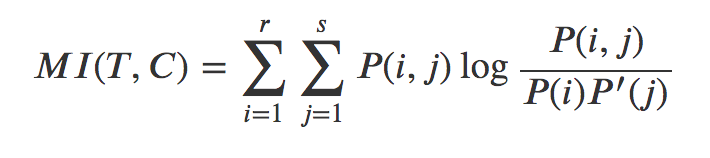

군집화 clustering
Summary
- 군집화(clustering)란 주어진 데이터 집합을 유사한 데이터들의 그룹으로 나누는 것으로 비지도 학습이다.
- 조정 랜드지수(Adjusted Rand Index)는 무작위 클러스터링에서 생기는 랜드지수 기댓값을 원래 랜드지수 값에 빼서 기댓값과 분산을 재조정한 것이다. 정답표가 있다.
- 조정 상호정보량(Adjusted Mutual Information)은 두 확률변수 의존성이 강하거나 군집의 개수가 많아져 상호정보량이 증가하여 올바른 비교가 어려울 때 상호정보량의 기댓값을 빼서 재조정한 것이다. 정답표가 있다. (조정랜드지수와 비슷함)
- 실루엣계수(silhouette Coefficient)는 정답정보가 없을 경우 군집화 성능을 판단하기 위한 기준으로 사용된다. 실루엣 계수가 클수록 좋은 군집화이다. 군집의 개수를 사용자가 정해주어야 할 때 도움이 된다. 군집의 형상이 복잡하거나 크기의 차이가 많이나면 정상비교가 불가능하다.
군집화 (clustering)
군집화(clustering)는 주어진 데이터 집합을 유사한 데이터들의 그룹으로 나누는 것이다. 군집(cluster)은 군집화으로 나누어진 유사한 데이터의 그룹이고 군집화는 예측 문제와 달리 특정한 독립변수와 종속변수의 구분도 없고 학습을 위한 목푯값도 필요로 하지 않는 비지도학습의 일종이다.
군집화 방법
- K-평균 군집화 (K-means Clustering)
- 디비스캔 군집화(DBSCAN Clustering)
- 유사도 전파 군집화(Affinity Propagation Clustering)
- 계층적 군집화(Hierarhical Clustering)
- 스펙트럴 군집화(Spectral Clustering)
군집화 방법은 사용법과 모수 등이 서로 다르다. K-평균법, 스펙트럴 군집화 등은 군집의 개수를 미리 지정해주어야 하지만 디비스캔, 유사도 전파법 등은 군집의 개수를 지정할 필요가 없다. 다만 이 경우에는 모형에 따라 특별한 모수를 지정해주어야 하는데 이 모수의 값에 따라 군집화 개수가 달라질 수 있다.
군집화 성능기준
- 조정 랜드지수(Adjusted Rand Index)
- 조정 상호정보량(Adjusted Mutual Information)
- 실루엣계수(silhouette Coefficient)
일치행렬
랜드지수를 구하려면 데이터가 원래 어떻게 군집화되어 있어야 하는지를 알려주는 정답(groundtruth)이 있어야한다. 개의 데이터 집합에서 두 개의 데이터를 선택하였을 때 그 두 데이터가 같은 군집에 속하면 1, 다른 군집에 속하면 0이라고 하자. 이 값은 x 행렬 로 나타내면 다음과 같다.
예를 들어 {0, 1, 2, 3, 4} 라는 5개의 데이터 집합에서 {0, 1, 2} 와 {3, 4}가 각각 같은 군집이면 행렬 T는 다음과 같다
groundtruth = np.array([
[1, 1, 1, 0, 0],
[1, 1, 1, 0, 0],
[1, 1, 1, 0, 0],
[0, 0, 0, 1, 1],
[0, 0, 0, 1, 1],
])
이제 군집화 결과를 같은 방법으로 행렬 로 표시하자. 만약 군집화가 정확하다면 이 행렬은 정답을 이용해서 만든 행렬과 거의 같은 값을 가져야 한다. 만약 군집화 결과가 {0, 1}과 {2, 3, 4}가 같은 군집이라면 행렬 는 다음과 같다.
clustering = np.array([
[1, 1, 0, 0, 0],
[1, 1, 0, 0, 0],
[0, 0, 1, 1, 1],
[0, 0, 1, 1, 1],
[0, 0, 1, 1, 1],
])
일치행렬(incidence matrix)은 위 두 행렬의 모든 원소에 대해 값이 같으면 1, 다르면 0으로 계산한 행렬이다. 즉, 데이터 집합에서 만들수 있는 모든 데이터 쌍에 대해 정답과 군집화 결과에서 동일한 값을 나타내면 1, 다르면 0이 된다.
incidence = 1 * (groundtruth == clustering) # 1*는 True/False를 숫자 0/1로 바꾸기 위한 계산
incidence
# 결과
array([[1, 1, 0, 1, 1],
[1, 1, 0, 1, 1],
[0, 0, 1, 0, 0],
[1, 1, 0, 1, 1],
[1, 1, 0, 1, 1]])
위의 일치 행렬은 두 데이터의 순서를 포함하므로 대칭행렬이다. 만약 데이터의 순서를 무시한다면 위 행렬에서 대각성분과 아래쪽 비대각 성분은 제외한 위쪽 비대각 성분만을 고려해야 한다. 위쪽 비대각 성분에서 1의 개수는 다음과 같아진다.
- a = T(정답)에서 같은 군집에 있고 C(결과)에서도 같은 군집에 있는 데이터 쌍의 수 ; 1이 1인것도 맞고
- b = T(정답)에서 다른 군집에 있고 C(결과)에서도 다른 군집에 있는 데이터 쌍의 수 ; 0이 0인것도 맞다
- 일치행렬 위쪽 비대각 성분에서 1의 개수 = a + b
랜드지수 Rand Index, RI
랜드지수는 가능한 모든 데이터 쌍의 개수에 대해 정답인 데이터 쌍의 개수의 비율로 정의한다. 0부터 1까지의 값을 가지고 1이 가장 좋은 성능을 뜻한다. 문제점은 무작위로 군집화를 한 경우에도 어느 정도 좋은 값이 나올 가능성이 높다. (무작위 군집화에서 생기는 랜드지수의 기댓값이 너무 크다)

조정 랜드지수 adjusted Rand index, ARI
조정 랜드지수는 무작위 군집화에서 생기는 랜드지수의 기댓값을 원래의 값에서 빼서 기댓값과 분산을 재조정한 것이다.

성능이 완벽한 경우 1이 된다. 반대로 가장 나쁜 경우로서 무작위 군집화를 하면 0에 가까운 값이 나온다. 경우에 따라서는 음수가 나올 수 있다.
조정 상호정보량 mutual information
상호정보량(mutual information)은 두 확률변수간의 상호 의존성을 측정한 값이다. 조정 상호정보량은 각 경우에 따른 상호정보량의 기댓값을 빼서 재조정한 것이다.
예시: 군집화 결과를 이산확률변수라고 가정한다.
- 정답은 = 의 개의 값을 가질 수 있는 이산확률변수이다.
- 군집화 결과는 = 의 개의 값을 가질 수 있는 이산확률변수라고 하자.
- 전체 데이터의 개수를 이라고 하면 이산확률변수 의 분포는 로 추정할 수 있다.
- 는 군집 에 속하는 데이터의 개수를 나타낸다.
- 이산확률변수 의 분포는 라고 추정하고
- 와 의 결합확률분포는 라고 추정한다.
- 는 군집 에도 속하고 군집 에도 속하는 데이터의 개수를 나타낸다.
- 확률변수 의 상호정보량은 아래와 같다.

두 확률변수가 독립이면 상호정보량의 값은 0이며 이 값이 상호정보량이 가질 수 있는 최소값이다. 두 확률변수가 의존성이 강할수록 상호정보량은 증가한다. 군집의 개수가 많아져도 상호정보량은 증가하여 올바른 비교가 어렵다.
실루엣계수
실루엣계수는 조정랜드지수, 조정상호정보량처럼 각각의 데이터가 원래 어떤 군집에 속해있는지 정답 정보가 없을 경우 사용한다.
방법
- 모든 데이터 쌍 에 대해 거리 혹은 비유사도(dissimilarity)을 구한다. 이 결과를 이용하여 모든 데이터 에 대해 다음 값을 구한다.
- : i 와 같은 군집에 속한 원소들의 평균 거리
- : i 와 다른 군집 중 가장 가까운 군집까지의 평균 거리
데이터 에 대한 실루엣계수
전체 데이터의 실루엣계수의 평균된 값을 평균 실루엣계수라고 한다.
만약 데이터 i에 대해 같은 군집의 데이터가 다른 군집의 데이터보다 더 가깝다면 그 데이터의 실루엣 계수는 양수가 된다. 하지만 다른 군집의 데이터가 같은 군집의 데이터보다 더 가깝다면 군집화가 잘못된 경우라고 볼 수 있는데 이 때는 그 데이터의 실루엣계수가 음수가 된다.
잘못된 군집화에서는 실루엣계수가 음수인 데이터가 많아지므로 평균 실루엣계수가 작아진다. 따라서 실루엣계수가 클수록 좋은 군집화이라고 할 수 있다.
군집화 방법 중에는 군집의 개수를 사용자가 정해주어야 하는 것들이 있는데 실루엣 계수는 군집의 개수를 정하는데 큰 도움이 된다.
단점은 군집의 형상이 복잡하거나 크기의 차이가 많이나면 정상적인 비교가 불가능 하다.